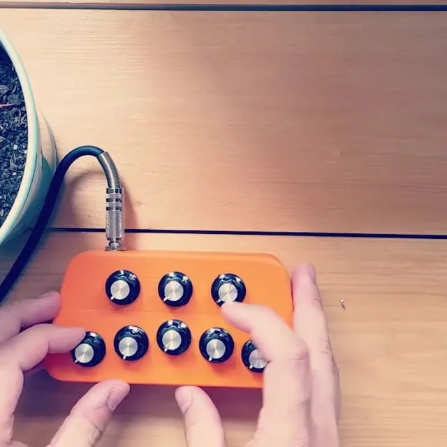
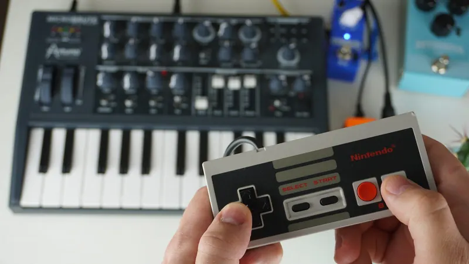
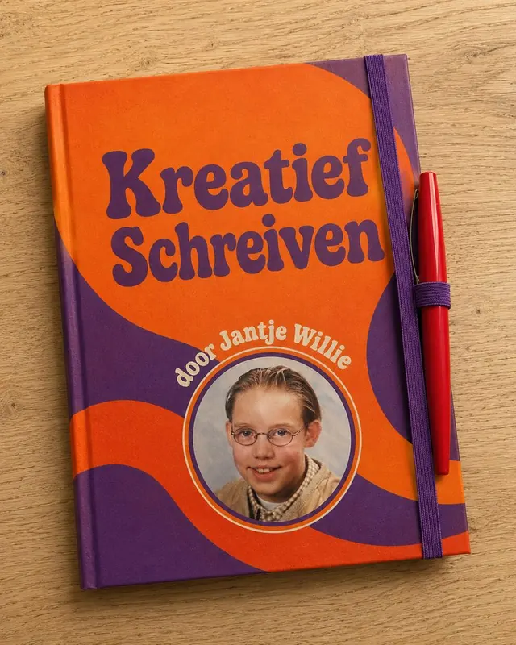
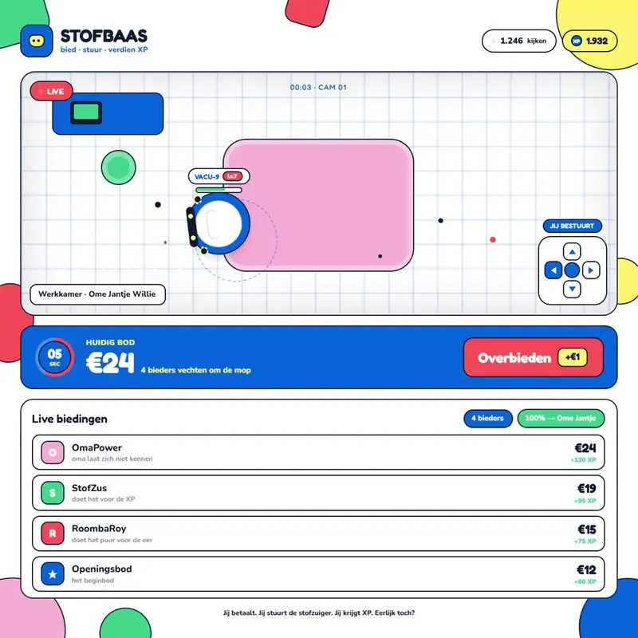
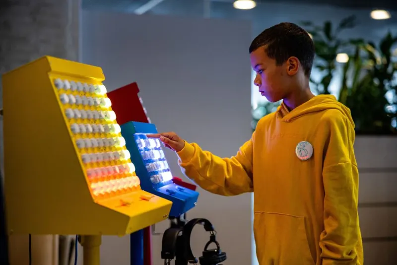

Een lofi-synthesizer met alleen knoppen
Geen witte en zwarte toetsen, gewoon knopjes draaien en akkoorden maken. Al het geluid komt uit dit lofi apparaatje zelf.
Alles bij elkaar
Elke installatie, webapp, workshop en blog op een rij, met de nieuwste bovenaan. Zoek je gericht: alleen de projecten of alleen de blogs.

Geen witte en zwarte toetsen, gewoon knopjes draaien en akkoorden maken. Al het geluid komt uit dit lofi apparaatje zelf.

De eerste Nintendo controller, ken je hem nog? Ik heb er een MIDI controller van gemaakt.

Dit heeft pappa nog geprogrammeerd zonder de hulp van AI. In 2020 bouwde ik een Nintendo Zapper om tot muziekinstrument.

Een boek vol spelfouten, met bij elk exemplaar een rood pennetje. Een puzzelboek voor spellingspuristen.

Poortjes door, een pieper op zak en geen mobiel. Drie dagen workshop geven in de jeugdgevangenis in Breda.

Een dag tussen het eindexamenwerk van Summa-studenten. De werken waren fantastisch, de verhalen erachter nog beter.

Gamen met mijn neefjes bracht me op een idee dat net te slecht is om te maken, maar net te leuk om los te laten.


Leerlingen maakten met de SideQuest Rave hun eigen soundtrack bij een zelfgemaakte film.


Weer aanwezig bij de MAKERDAYS Eindhoven met de SideQuest Rave en de arcademachine, inmiddels bijna traditie.

We werden ingezet als rustmoment, maar werden het drukste plekje van het mediafestival.


In 2025 werkten we samen met Joost Klein en bouwden we installaties voor musea die nog niemand gezien had.


Een gitaar die ik niet alleen versterkte maar ook liet drummen. Achteraf het kantelpunt van muziek maken naar bouwen.

Vier dagen op het Makers Festival Twente met de arcadekast en de Side Quest Rave. Van giechelende kids tot ouders die weer kind durfden te zijn.


Twee dagen in het teken van de makers, met de Side Quest Rave en de arcade-kast op de fair.

Teken met een potlood en hoor je tekening. Grafiet geleidt, en hoe langer je lijn, hoe lager de toon.


Bouw je eigen muziekmachine met sequencers en tikkende elektronica, en maak een geluidskunstwerk dat er ook goed uitziet.

Ontwerp en bouw je eigen videogame, speel 'm op een echte arcadekast en deel 'm online met je vrienden.

Bouw van gerecyclede materialen je eigen elektrische gitaar, en ontdek de techniek achter geluid.

Met de SideQuest Rave op het Nerdland Festival: samen muziek maken, ongeacht je muzikale achtergrond.


De uitdaging die ik gaf aan studenten van de KU Leuven, en de drumrobot die eruit voortkwam.

Get in touch
Zit er iets tussen dat je aanspreekt? Bel of mail gerust, we denken graag mee.